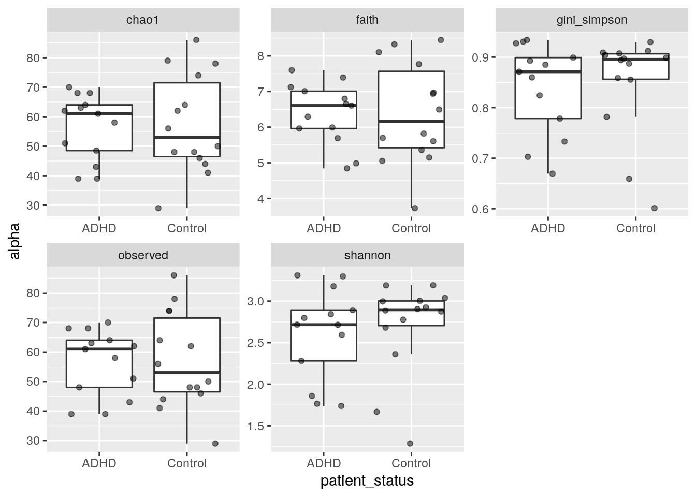

7 Alpha diversity demo
7.1 Alpha diversity estimation
First let`s load the required packages and data set
library(mia)
library(miaViz)
library(tidyverse)
# library(vegan)
tse <- read_rds("data/Tengeler2020/tse.rds")
tse## class: TreeSummarizedExperiment
## dim: 151 27
## metadata(0):
## assays(1): counts
## rownames(151): 1726470 1726471 ... 17264756 17264757
## rowData names(6): Kingdom Phylum ... Family Genus
## colnames(27): A110 A12 ... A35 A38
## colData names(4): patient_status cohort patient_status_vs_cohort
## sample_name
## reducedDimNames(0):
## mainExpName: NULL
## altExpNames(0):
## rowLinks: a LinkDataFrame (151 rows)
## rowTree: 1 phylo tree(s) (151 leaves)
## colLinks: NULL
## colTree: NULLThen let’s estimate multiple diversity indices.
?estimateDiversity
tse <- estimateDiversity(tse,
index = c("shannon","gini_simpson","faith"),
name = c("shannon","gini_simpson","faith"))
head(colData(tse))## DataFrame with 6 rows and 7 columns
## patient_status cohort patient_status_vs_cohort sample_name shannon
## <character> <character> <character> <character> <numeric>
## A110 ADHD Cohort_1 ADHD_Cohort_1 A110 1.76541
## A12 ADHD Cohort_1 ADHD_Cohort_1 A12 2.71644
## A15 ADHD Cohort_1 ADHD_Cohort_1 A15 3.17810
## A19 ADHD Cohort_1 ADHD_Cohort_1 A19 2.89199
## A21 ADHD Cohort_2 ADHD_Cohort_2 A21 2.84198
## A23 ADHD Cohort_2 ADHD_Cohort_2 A23 2.79794
## gini_simpson faith
## <numeric> <numeric>
## A110 0.669537 7.39224
## A12 0.871176 6.29378
## A15 0.930561 6.60608
## A19 0.899210 6.79708
## A21 0.885042 6.65110
## A23 0.859813 5.96246We can see that the variables are included in the data. Similarly, let’s calculate richness indices.
tse <- estimateRichness(tse,
index = c("chao1","observed"))
head(colData(tse))## DataFrame with 6 rows and 10 columns
## patient_status cohort patient_status_vs_cohort sample_name shannon
## <character> <character> <character> <character> <numeric>
## A110 ADHD Cohort_1 ADHD_Cohort_1 A110 1.76541
## A12 ADHD Cohort_1 ADHD_Cohort_1 A12 2.71644
## A15 ADHD Cohort_1 ADHD_Cohort_1 A15 3.17810
## A19 ADHD Cohort_1 ADHD_Cohort_1 A19 2.89199
## A21 ADHD Cohort_2 ADHD_Cohort_2 A21 2.84198
## A23 ADHD Cohort_2 ADHD_Cohort_2 A23 2.79794
## gini_simpson faith chao1 chao1_se observed
## <numeric> <numeric> <numeric> <numeric> <numeric>
## A110 0.669537 7.39224 68 0.000000 68
## A12 0.871176 6.29378 51 0.000000 51
## A15 0.930561 6.60608 68 0.000000 68
## A19 0.899210 6.79708 62 0.000000 62
## A21 0.885042 6.65110 58 0.000000 58
## A23 0.859813 5.96246 61 0.247942 617.2 Visualizing alpha diversity
We can plot the distributions of individual indices:
#individual plot
p <- as_tibble(colData(tse)) %>%
ggplot(aes(shannon)) +
geom_histogram()
print(p)
#multiple plots
p <- as_tibble(colData(tse)) %>%
pivot_longer(cols = c("shannon","gini_simpson","faith","chao1","observed"), names_to = "index", values_to = "alpha") %>%
ggplot(aes(alpha)) +
geom_histogram() +
facet_wrap(vars(index), scales = "free")
print(p)
and the correlation between indices:
p <- as_tibble(colData(tse)) %>%
pivot_longer(cols = c("shannon","gini_simpson","faith","chao1","observed"), names_to = "index", values_to = "alpha") %>%
full_join(.,., by = "sample_name") %>%
ggplot( aes(x = alpha.x, y = alpha.y)) +
geom_point() +
geom_smooth() +
facet_wrap(index.x ~ index.y, scales = "free")
print(p)
7.3 Comparing alpha diversity
It is often interesting to look for any group differences:
p <- as_tibble(colData(tse)) %>%
pivot_longer(cols = c("shannon","gini_simpson","faith","chao1","observed"), names_to = "index", values_to = "alpha") %>%
ggplot( aes(x = patient_status, y = alpha)) +
geom_boxplot(outlier.shape = NA) +
geom_jitter(alpha =0.5) +
facet_wrap(vars(index), scales = "free")
print(p)
Moreover, we can test the group differences by parametric or non-parametric tests:
df1 <- as_tibble(colData(tse)) %>%
pivot_longer(cols = c("faith","chao1","observed"), names_to = "index", values_to = "alpha") %>%
group_by(index) %>%
nest() %>%
mutate(test_pval = map_dbl(data, ~ t.test(alpha ~ patient_status, data = .x)$p.value)) %>%
mutate(test = "ttest" )
df2 <- as_tibble(colData(tse)) %>%
pivot_longer(cols = c("shannon","gini_simpson"), names_to = "index", values_to = "alpha") %>%
group_by(index) %>%
nest() %>%
mutate(test_pval = map_dbl(data, ~ wilcox.test(alpha ~ patient_status, data = .x)$p.value))%>%
mutate(test = "wilcoxon" )
df <- rbind(df1,df2) %>% select(-data) %>% arrange(test_pval) %>% ungroup()
df## # A tibble: 5 × 3
## index test_pval test
## <chr> <dbl> <chr>
## 1 shannon 0.488 wilcoxon
## 2 gini_simpson 0.685 wilcoxon
## 3 chao1 0.856 ttest
## 4 observed 0.900 ttest
## 5 faith 0.983 ttestEnd of the demo.
7.4 Exercises
Do “Alpha diversity basics” from the exercises.